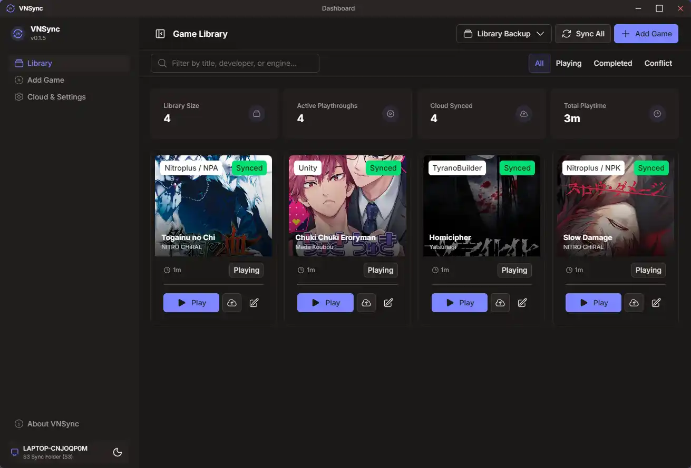
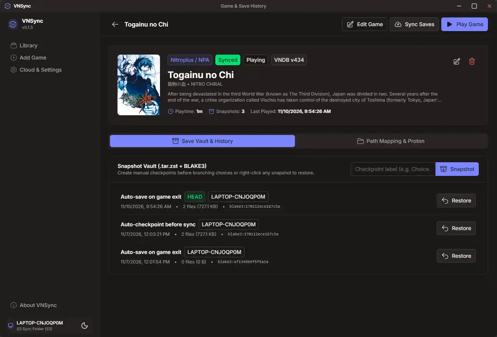
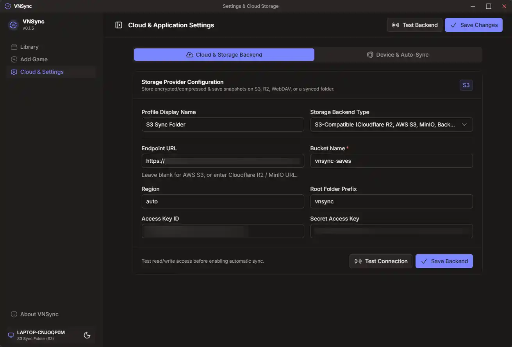

VNSync
Cross-platform Visual Novel & RPG save synchronization manager built with Tauri v2 (Rust) and Vue 3. Sync saves seamlessly between Windows, macOS, Linux, and Steam Deck.

Download
Select the installer for your operating system from the latest GitHub release:
Windows
Windows 10 / 11 (64-bit). Available as NSIS setup executable or MSI package.
macOS
Universal binary supporting both Apple Silicon (M1/M2/M3/M4) and Intel Macs.
Linux & Steam Deck
Available as portable AppImage, Debian/Ubuntu package (.deb), or RPM.
Looking for older versions, checksums, or source tarballs? Visit the GitHub Releases page.
Screenshots


Features
Cross-OS & Steam Deck Paths
Stores portable path rules (<game_dir>, <win_appdata>, <win_locallow>, <win_documents>) and translates them across Windows, macOS, and Linux Wine/Proton compatdata prefixes.
Engine Fingerprinting
Automatically detects save directories for Ren'Py, RPG Maker (MV, MZ, VX Ace, VX, XP), Kirikiri / KAG (.xp3), and Unity games.
Content-Addressable Vault
Packs save directories into deterministic .tar.zst archives hashed with BLAKE3. Keeps local safety snapshots before any restore or sync overwrite.
Lineage Conflict Detection
Tracks parent snapshot IDs and BLAKE3 tree hashes for safe fast-forward push/pull, or side-by-side conflict resolution when two devices diverge.
Unified Storage Backends
Powered by Apache OpenDAL. Sync via S3-compatible storage (Cloudflare R2, AWS S3, MinIO, Backblaze B2), WebDAV (Nextcloud, ownCloud, Synology), or local/network folders.
VNDB Metadata & Launcher
Fetches game titles, Japanese titles, cover art, and descriptions from VNDB API v2. Launches games with pre-flight save pull, tracks playtime, and snapshots on exit.
Technical Specifications
| Supported Engines | Ren'Py, RPG Maker (MV / MZ / VX Ace / VX / XP), Kirikiri / KAG, Unity, and custom path rules |
|---|---|
| Sync Storage Backends | S3 / R2 / B2 / MinIO, WebDAV (Nextcloud / ownCloud), Local & Shared Network Folders |
| Archive & Integrity | Zstandard (.tar.zst) compression with deterministic BLAKE3 content hashing |
| Stack | Tauri v2 (Rust backend, SQLite local catalog) + Vue 3 / Nuxt UI v4 frontend |
| License | GPL-3.0 Open Source |